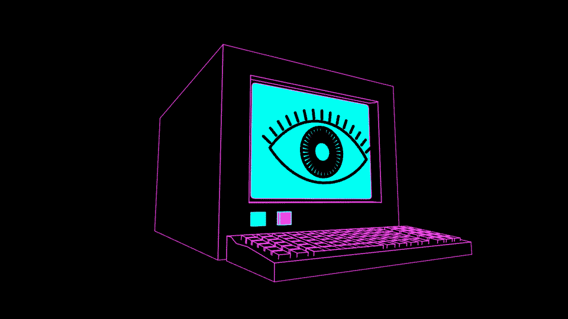

'The Space Between The One Zero' is a media design project that explores the relationship between humans and technology using Praxinoscopes (1800s pre-cinema animation machines).
We examine the intersection of digital and pre-digital media, and the broader question of, "Are we losing ourselves to the machine?"
Praxinoscopes consist of spinning discs containing a series of still images beneath faceted mirror prisms. As the discs rotate, images are reflected in succession in the mirrors, creating animation.
As digital designers, we are placing value on working within an analogue space, away from digital screens. This approach is an extension of our desire to challenge the viewer to do the same and question the relationships each of us have with our own digital devices.